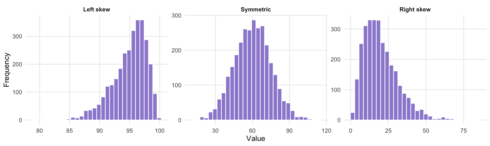
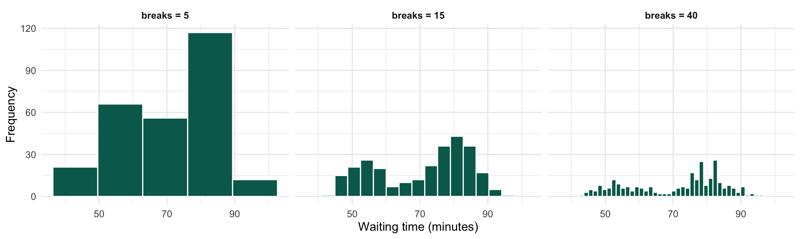
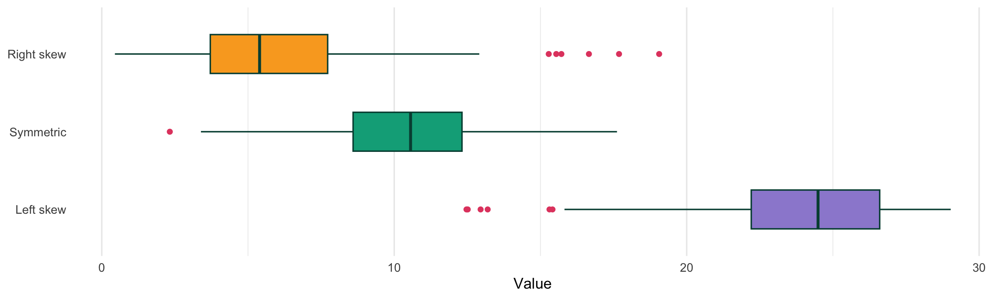

Chapter 3: Descriptive Statistics
STA258: Statistics with Applied Probability University of Toronto Mississauga

Chapter Roadmap
1 - Numerical Summaries Centre (mean, median, mode), spread (variance, SD, range, IQR), and position (percentiles, quartiles).
2 - Graphical Summaries Histograms and boxplots. Read shape, spread, and outliers from a plot.
3 - Reading & Comparing Decide which summary tells the right story and compare distributions side by side.
Core skill Describing a dataset in numbers and in pictures.
Core tool R functions like mean(), summary(), hist(), and boxplot().
Core habit Pair a number with a plot - one rarely tells the whole story.
3.1 Representing Data
Data and notation
Data are measurements we write symbolically. For \(n\) observations, we use a lowercase letter \(x\) with a subscript for the index:
\[x_1, \; x_2, \; \ldots, \; x_n\]
where \(x_i\) is one observation and \(i = 1, \ldots, n\). The value \(n\) is the sample size.
Condensed form: \(\; x_i : i = 1, \ldots, n\)
3.1 Tabular Form
| Index | 1 | 2 | \(\cdots\) | \(n\) |
|---|---|---|---|---|
| Observation | \(x_1\) | \(x_2\) | \(\cdots\) | \(x_n\) |
Example. Five students’ study hours:
\[3, \; 4, \; 4, \; 6, \; 8\]
Here \(n = 5\), \(x_1 = 3\), \(x_2 = 4\), \(\ldots\), \(x_5 = 8\).
Why bother with notation?
Once we write data as \(x_1, \ldots, x_n\), every formula in this chapter (mean, variance, IQR) reads the same regardless of what the data actually measure.
Example: Commute Methods
Example A survey asked 40 STA258 students how they usually commute to campus.
| Method | Bus | Car | Walk | Train | Other |
|---|---|---|---|---|---|
| Frequency | 14 | 9 | 5 | 8 | 4 |
(a) Is this variable qualitative or quantitative?
(b) Create a relative frequency table.
(c) Which method is most common?
(d) What percentage use public transport (Bus and Train)?
Commute Methods - Check in R
Example
A class collects the daily steps walked by ten students: \(4, 6, 6, 7, 8, 8, 9, 10, 11, 12\) (thousands of steps). In the notation \(x_1, x_2, \ldots, x_n\), what is \(n\)?
- 4
- 8
- 10
- 12
3.2 Numerical Measures
Centre Where is the “typical” value? Mean, median, mode.
Spread How dispersed are the values? Variance, SD, range, IQR.
Position Where does one value sit relative to the rest? Percentiles, quartiles.
No single number tells the whole story. We pair centre with spread, and read both alongside a plot.
3.2.1 Mean
Sample mean \(\bar{x}\)
For a sample \(x_1, x_2, \ldots, x_n\),
\[\bar{x} \; = \; \frac{\displaystyle\sum_{i=1}^{n} x_i}{n} \; = \; \frac{x_1 + x_2 + \cdots + x_n}{n}\]
The mean is the arithmetic average - the one most people mean when they say “average.”
3.2.2 Median
Median
The middle value of a data set once the observations are sorted in ascending order.
Let \(x_{(1)}, x_{(2)}, \ldots, x_{(n)}\) be the sorted values. Then:
- If \(n\) is odd: \(\;\;\) Median \(=\) observation \(\left(\dfrac{n+1}{2}\right)\)
- If \(n\) is even: \(\;\;\) Median \(=\) average of observations \(\left(\dfrac{n}{2}\right)\) and \(\left(\dfrac{n}{2} + 1\right)\)
3.2.2 Median in R
Sorted odd: 1, 1, 3, 4, 5 → middle value is 3.
Sorted even: 1, 1, 3, 4, 5, 9 → middle pair is 3 and 4, so median \(= (3 + 4)/2 = 3.5\).
3.2.3 Mode
Mode
The most frequently occurring value in a data set.
A data set can be unimodal, bimodal, or have no mode if every value appears the same number of times.
Example: Study Hours
Example Ten students reported the number of hours they studied for a midterm:
\[2, 4, 5, 5, 6, 7, 7, 7, 9, 12\]
(a) Find the mean study time.
(b) Find the median study time.
(c) Find the mode.
(d) Which measure of centre is most affected by the value \(12\)? Explain briefly.
Study Hours - Check in R
Example
A class has the following test scores out of 100: \(72, 75, 78, 80, 82, 85, 12\). One student missed most of the term and scored 12. Which measure best describes a “typical” score?
- Mean
- Median
- Mode
- Range
3.2.4 Variance
Sample variance \(s^2\)
The average squared deviation from the mean:
\[s^{2} \; = \; \frac{\displaystyle\sum_{i=1}^{n} (x_i - \bar{x})^2}{n - 1}\]
where \(\bar{x}\) is the sample mean.
Each term is squared, so \(s^2 \ge 0\) always.
The units of \(s^2\) are the units of the data squared (e.g. dollars²). That is awkward to interpret, which is why we usually report the standard deviation instead.
Why divide by \(n-1\)?
Bessel’s correction. We use sample data \(\bar{x}\) to estimate the (unknown) population mean \(\mu\). That estimation step “uses up” one piece of information.
Dividing by \(n - 1\) instead of \(n\) corrects for this, and makes \(s^2\) an unbiased estimator of the population variance.
You will see a formal proof of this in STA260. For now, just remember:
- Sample variance → divide by \(n - 1\)
- Population variance → divide by \(N\)
3.2.4 Variance in R
Tip. Build the table \((x_i, x_i - \bar{x}, (x_i - \bar{x})^2)\) on paper before reaching for var(). Several exam questions ask for the table.
3.2.5 Standard Deviation
Sample standard deviation \(s\)
\[s \; = \; +\sqrt{s^{2}}\]
where \(s^2\) is the sample variance.
Taking the square root returns us to the original units, which is why we usually report \(s\) rather than \(s^2\).
3.2.6 Range
Range
\[\text{Range} \; = \; \max(x_1, \ldots, x_n) \; - \; \min(x_1, \ldots, x_n)\]
The difference between the largest and smallest observations.
Caution. The range uses only two values, so a single extreme observation can change it dramatically. It is a quick summary, not a robust one.
Example: Quiz Scores
Example A student recorded their quiz scores out of \(10\):
\[6, 7, 7, 8, 9, 10\]
(a) Find the range.
(b) Find the sample variance \(s^{2}\).
(c) Find the sample standard deviation \(s\).
(d) What does the standard deviation tell us in this context?
Quiz Scores - Check in R
3.2.7 Percentiles
\(p^{\text{th}}\) percentile
In an ordered data set, the \(p^{\text{th}}\) percentile is the value such that \(p\%\) of all observations lie below it.
Example. A class writes a difficult test and a student scores 72%. Although 72% is a B-, the test was hard. In fact, this mark sits at the 90th percentile for this test - the student scored higher than 90% of the class.
A relative position can matter more than the raw mark.
3.2.8 Quartiles
Quartiles
Three values that split the sorted data into four equal-size groups.
- First quartile \(Q_1\): 25% of values below it.
- Second quartile \(Q_2\): 50% of values below it. This is the median.
- Third quartile \(Q_3\): 75% of values below it.
Quartiles are just three specific percentiles: \(Q_1 = P_{25}\), \(Q_2 = P_{50}\), \(Q_3 = P_{75}\).
Interquartile Range (IQR)
IQR
\[\text{IQR} \; = \; Q_3 - Q_1\]
The width of the middle 50% of the data.
Unlike the range, the IQR is resistant to outliers because the bottom 25% and top 25% of the data are ignored.
Example: Final Exam Scores
Example The final exam scores for \(12\) students are:
\[52, 58, 61, 65, 70, 72, 75, 78, 82, 86, 90, 96\]
(a) Find the median.
(b) Find the first quartile, \(Q_{1}\).
(c) Find the third quartile, \(Q_{3}\).
(d) Find the interquartile range (IQR).
(e) Using the \(1.5 \times \text{IQR}\) rule, which scores would be flagged as unusually low or high?
Final Exam Scores - Check in R
Example
For a sample with \(Q_1 = 5\) and \(Q_3 = 11\), would an observation of \(25\) be flagged as a potential outlier by the \(1.5 \times \text{IQR}\) rule?
- Yes - it sits above the upper cutoff
- No - it sits inside the whiskers
- We cannot tell without the median
- We cannot tell without the sample size
3.3 Graphical Techniques
Why plot at all? Numbers alone hide the shape of a distribution. A picture reveals skewness, gaps, clusters, and unusual values.
Two workhorses Histograms show the full shape of one variable. Boxplots highlight centre, spread, and outliers, and stack neatly for group comparisons.
Pair numbers with pictures. A mean of 65 looks different on a symmetric bell than on a right-skewed pile with a long tail. Always look at both.
Skewness
Skewness
A measure of the symmetry (or lack of it) in the distribution of data.
Left-skewed Long tail on the left. Most values bunched on the right. Also called negatively skewed.
Symmetric Roughly mirror-image around the centre. Mean \(\approx\) median.
Right-skewed Long tail on the right. Most values bunched on the left. Also called positively skewed.
Skewness Illustrated

The tail points in the direction of the skew. “Right-skewed” = tail to the right. The mean is pulled toward the tail; the median stays near the bulk.
Skewness vs Mean & Median
Rule of thumb
- Left-skewed: Mean \(<\) Median
- Symmetric: Mean \(\approx\) Median
- Right-skewed: Mean \(>\) Median
The mean is pulled toward the long tail. The median is not.
Outliers
Outlier
A data point that appears to lie outside the overall pattern of the rest of the data.
Do not just delete outliers.
Investigate first - is it a data-entry error, a measurement error, or a genuine rare observation? The right call depends on the cause.
Common causes
- Transcription error (typing 100 instead of 10)
- Measurement error (broken instrument)
- A real but unusual case (a millionaire in a sample of incomes)
3.3.1 Histograms
Histogram
A plot of a quantitative variable, built by:
- Splitting the range of the data into intervals (bins).
- Counting how many observations fall in each bin.
- Drawing a bar over each bin with height equal to its frequency.
The \(x\)-axis shows the bins, and the \(y\)-axis shows frequency (or relative frequency).
Frequency vs relative frequency. Frequency histograms show raw counts; relative-frequency histograms show proportions (each bar height \(= f_i / F\), where \(F = \sum f_i\)).
Histogram Construction
Table 3.1 - How a histogram is constructed
| Class Interval | Frequency | Relative Frequency |
|---|---|---|
| \([a_1, b_1)\) | \(f_1\) | \(r_1 = f_1 / F\) |
| \([a_2, b_2)\) | \(f_2\) | \(r_2 = f_2 / F\) |
| \([a_3, b_3)\) | \(f_3\) | \(r_3 = f_3 / F\) |
| \(\vdots\) | \(\vdots\) | \(\vdots\) |
| \([a_m, b_m]\) | \(f_m\) | \(r_m = f_m / F\) |
| Total | \(F = \sum_{i=1}^{m} f_i\) | \(1\) |
Bin widths are usually equal but do not have to be. We choose a width that shows the structure of the data without too much noise.
3.3.1 Histogram in R
Try it. Add the argument breaks = 5 (or 30) to the hist() call to see how bin width changes the picture.
The faithful waiting times are bimodal - two distinct clusters around 55 and 80 minutes.
Bin Width Matters

Too few bins hide the bimodal shape; too many bins make it look noisy. The middle picture (15 bins) shows both clusters clearly.
Example
A right-skewed histogram shows the annual salaries at a tech company. A reporter writes: “The average salary is $95,000, so most employees earn around that amount.”
Which is the better summary of a typical employee’s salary?
- The mean
- The median
- They give the same answer
- Neither - use the mode
3.3.2 Boxplots
Boxplot (box-and-whisker plot)
A five-number summary in graphical form:
- Box spans from \(Q_1\) to \(Q_3\).
- Line inside the box marks the median.
- Whiskers extend out to the most extreme observation inside the outlier cutoffs.
- Dots beyond the whiskers are flagged as potential outliers.
The \(1.5 \times \text{IQR}\) Rule
Outlier cutoffs (fences)
\[\text{Lower cutoff} = Q_1 - 1.5 \times \text{IQR}\] \[\text{Upper cutoff} = Q_3 + 1.5 \times \text{IQR}\]
Any value outside these cutoffs is flagged as a potential outlier.
Example. A dataset has \(Q_1 = 5\), \(Q_3 = 11\), so \(\text{IQR} = 6\) and \(1.5 \times \text{IQR} = 9\).
- Lower cutoff: \(5 - 9 = -4\)
- Upper cutoff: \(11 + 9 = 20\)
Any value below \(-4\) or above \(20\) would be flagged.
3.3.2 Boxplot in R
What to look for
- Where does the median sit inside the box? Off-centre suggests skew.
- How long are the whiskers? Unequal whisker lengths also suggest skew.
- Any dots? Those are potential outliers.
Skewness from a Boxplot

Reading skew from a box. Median closer to \(Q_3\) + long lower whisker → left skew. Median closer to \(Q_1\) + long upper whisker → right skew. The longer tail points in the direction of the skew.
Example: Online Quiz Times
Example A professor records the time, in minutes, that students spent completing an online quiz:
\[12, 14, 15, 15, 16, 18, 20, 22, 25, 28, 35, 42\]
(a) Would a histogram or boxplot better show the shape of the distribution?
(b) Would a boxplot or histogram be better for identifying possible outliers?
(c) Describe the likely shape: symmetric, left-skewed, or right-skewed.
(d) Which value seems most likely to be an outlier?
Online Quiz Times - Check in R
Example
Boxplots of 80 delivery times. Restaurant A has a short box, short whiskers, and no outliers. Restaurant B has a wider box, a long upper whisker, and two high outliers. One sells sushi (careful, consistent prep), the other pizza (occasional rush orders). Which is the sushi restaurant?
- Restaurant A
- Restaurant B
- Both equally consistent
- Cannot tell
Example
In a sample, the median sits noticeably closer to \(Q_3\) than to \(Q_1\), and the lower whisker is longer. What does this suggest?
- The distribution is right-skewed
- The distribution is left-skewed
- The distribution is symmetric
- There must be a high outlier
Comparing Two Groups
Same mean, different stories.
Both groups have \(\bar{x} = 15\), but Group B is much more spread out. Mean alone hides this - the standard deviation and the side-by-side boxplots make it obvious.
Example: Two Sections
Example Two sections of a course report the following midterm marks. Section A: \(62, 65, 68, 70, 72, 75, 78\). Section B: \(45, 65, 68, 70, 72, 75, 95\).
(a) Find the mean mark for each section.
(b) Find the median mark for each section.
(c) Which section has more spread? Explain.
(d) For Section B, would the mean or the median better represent a typical student? Explain.
Two Sections - Check in R
Worked Example: Variance Table
Six study hours: \(x = 2, 4, 4, 6, 6, 8\). \(\;\;\bar{x} = 30 / 6 = 5\).
| \(x_i\) | \(x_i - \bar{x}\) | \((x_i - \bar{x})^2\) |
|---|---|---|
| 2 | \(-3\) | \(9\) |
| 4 | \(-1\) | \(1\) |
| 4 | \(-1\) | \(1\) |
| 6 | \(+1\) | \(1\) |
| 6 | \(+1\) | \(1\) |
| 8 | \(+3\) | \(9\) |
| Sum | \(0\) | \(22\) |
\[s^2 = \frac{22}{6 - 1} = 4.4, \quad s = \sqrt{4.4} \approx 2.10\]
Example
A teaching assistant wants to compare the distribution of test scores between two tutorial sections. Which graph is best suited for this comparison?
- A bar chart
- Two separate histograms
- Side-by-side boxplots
- A scatterplot
Chapter Summary
Centre Mean uses every value. Median ignores extremes. Mode is the most common value.
Spread Range = max − min (sensitive). IQR = \(Q_3 - Q_1\) (resistant). SD \(s\) is the typical distance from \(\bar{x}\).
Shape Read skewness from a histogram (which way does the tail point?) or a boxplot (which whisker is longer?).
One slide takeaway. Always report a number and a picture. A mean without a histogram, or a histogram without a summary, leaves half the story untold.
Bonus Example: Textbooks Owned
Bonus Example The number of textbooks owned by \(15\) students:
\[0, 1, 1, 2, 2, 2, 3, 3, 4, 4, 4, 5, 6, 8, 10\]
(a) Is the variable discrete or continuous?
(b) Find the mean, median, and mode.
(c) Find the range and the IQR.
(d) Would a histogram or boxplot better show the overall shape?
(e) Would a boxplot or histogram be more useful for detecting outliers?
Bonus Example: Textbooks Owned - Check in R
Up Next
Chapter 4 - Foundations of Inference
We move from describing the data we have (this chapter) to making statements about a wider population based on a sample. You will meet sampling distributions, point estimates, and the start of confidence intervals.
STA258 | Chapter 3